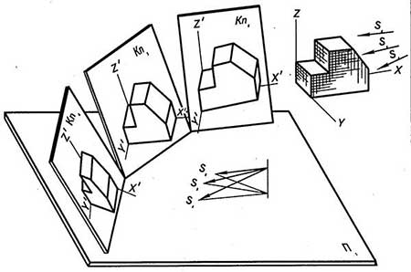

Роль визуализации изображения в нашей жизни играет большую роль.В древности существовали многочисленные рисунки и иероглифы на камнях, в пещерах и скалах, на различных предметах и оружии.
С некоторых пор изготовление любой модели начинается с выполнения его наброска или эскиза, которые позволяют определить не только форму и размеры всех частей объекта, но и получить наглядное представление о нем. Первые приемы из техники способов отображения предметов создавались в течение многих веков. Их выполняли способом, который был научно обоснован лишь в конце 18 века основателем начертательной геометрии ученым Г. Монжем. В нашей стране первые стандарты, содержащие порядок выполнения машиностроительных чертежей, были опубликованы в 30-х годах 19 века и постоянно подвергались коррекциям и дополнениями. На текущий момент все технические проекты выполняются по правилам, определяемым комплексом государственных стандартов под названием единая система конструкторской документации, в дальнейшем будет указываться как ЕСКД. Соблюдение этих инструкций может быть руководством к действию для всех предприятий и инженеров. Составленный по правилам и нормам чертеж должен быть понятен любому инженеру проектировщику, технически «подкованному» исполнителю независимо от страны, в которой он живет. Чертеж - интернациональная мысль передачи графической информации и средство выражения замыслов конструктора, и основной производственный документ, по которому изготавливают сборки, механизмы, приборы и их составные части. Чертёжное изображение тела состоит из двух и более взаимосвязанных изображений, выполненных по правилам прямоугольного проецирования, с соблюдением правил и условностей, изложенных в стандартах.
Техническая дисциплина инженерная графика тренирует и формирует важное умение будущего инженера выражать производственно-проектную задумку посредством чертежей, электрических схем и других типов конструкторских документов. Важным условием успешного изучения графики является твёрдые знания теории. Под изучением подразумевается не формальное заучивание стандартов, а понимание их смысла, правильного толкование содержащихся в них пожеланий, требований и рекомендаций.
Главной задачей, поставленной перед проектировщиком - это есть заложение основ и развитие объемного и пространственного геометрического мышления – способности личности, необходимой для конструкторской, проектной и технологической деятельности. Творческая работа немыслима без знания правил, соединяющих пространственную форму и ее плоское изображение. Этим и обусловлена не последняя роль инженерной графики в формировании будущего специалиста - дисциплина является теоретической базой для освоения приёмов и последующих общепрофессиональных и специальных знаний. Если рассматривать масштабно, то инженерная графика состоит из двух основных разделов: базовые основы начертательной геометрии и машиностроительного черчения. Начертательная геометрия изучает способы построения изображений на плоскости и методы решения геометрических задач на этих изображениях.
Существует перечень уроков и заданий, составляющих базовый курс для усвоения инженерной графики и получения навыков конструирования:
- усвоить основы изображения элементов любого предмета (точек, линий, поверхностей);
- изучить типовые приёмы решения позиционных задач (относительное положение, принадлежность, определение общих элементов фигур)

- определение натуральной величины плоских фигур;
- научиться выполнять отображение деталей в прямоугольных и аксонометрических проекциях в соответствии с нормативными актами; 
- освоить выполнение изображений крепежных резьбовых стандартных изделий;
- получить опыт по выполнению разъемных и неразъемных соединений деталей.
Инженерная графика так же дает теоретическую базу для изучения других общеинженерных дисциплин: сопромат, теории механизмов и машин и деталей машин, оформлять проектно-конструкторские работы в соответствии с действующими государственными стандартами, техническими условиями и другими нормативными документами. Если вам понадобится практическая или теоретическая помощь в чертежах по инженерной графике обращайтесь сюда. Данный предмет представляет собой дисциплину, изучающую способы передачи информации при помощи конструкторских документов, они включают в себя информацию о устройстве технической вещи. Конструкторский документ содержит технические сведения о составе, взаимном расположении, соединении частей и элементов предмета, о типах материала, из которых изготовлены эти детали. Удачность деятельности инженера конструктора в будущем определяется не только знаниями и опытом, но и уровнем профессиональных качеств. Для инженера - это техническая грамотность, творческий подход к выполняемому заданию, развитое пространственное мышление, умение быстро координировать свою работу используя ЕСКД, владеть компьютерной техникой, готовность постоянно самосовершенствоваться.